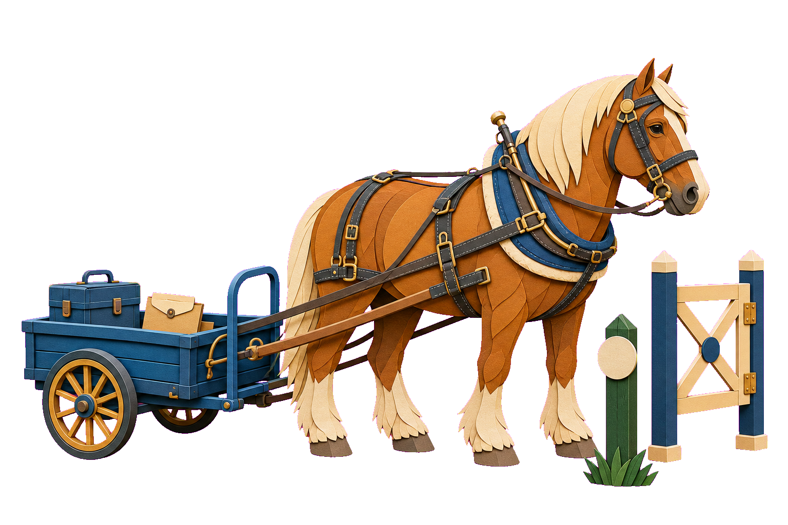

3차시
원본을 지키는 것도, 결과물을 내보낼지 결정하는 것도 사람입니다.
2차시에는 내가 정한 기준으로 자료를 모았습니다. 3차시에는 남이 준 데이터 하나를 여러 결과물로 바꿉니다.
3차시_실습 폴더의 CSV 한 파일에서 출발해 형식만 바꿔 네 번 만듭니다.
mock_ecommerce_orders.csv
원본읽기만
dashboard.html
HTML 대시보드
한눈에 이해
분석결과.md
Markdown 근거 문서
숫자와 한계를 적은 문서
발표자료.pptx
PPTX 발표자료
발표자 노트까지
분석보고서.docx
DOCX 보고서
표와 차트가 든 문서
네 결과물의 총매출은 모두 205,274,700원으로 같아야 합니다.
여섯 구간을 지납니다
구간마다 손에 남는 결과가 하나씩 생깁니다
PART
코드만이 아닙니다. 데이터 하나가 여러 형식의 결과물이 됩니다.
무엇을 만들지는 누가 볼지로 정합니다. 만들기 전에 권한 칸부터 확인합니다.
코드를 만드는 AI에서, 파일과 데이터로 결과물을 만드는 Agent로 봅니다.
무엇을 만들지는 누가 보는지로 정합니다.
모양은 바뀌어도 숫자는 바뀌지 않습니다.
2차시에 배운 용어
맡기기 전에 목표 · 읽을 자료 · 권한 · 완료 조건을 정해 두고, 끝나면 확인하는 작업 틀입니다.
모두가 합의한 표준 용어는 아니고 이 수업에서 쓰는 이름입니다.

PART
결과물을 믿으려면, 만들기 전에 확인하고 승인합니다.
확인 → 계획 → 승인 → 실행. 결과물을 만들기 전에 이 순서만 지킵니다.
온라인 쇼핑몰 주문 기록을 흉내 낸 모의 데이터입니다.
오늘 만드는 파일은 모두 3차시_실습 폴더 안에 생깁니다.
행 하나가 주문 하나인지는 아직 모릅니다. 곧 확인합니다.
세 가지에 이름을 붙여야 따로 셀 수 있습니다.
같은 주문이 두 번 들어 있습니다.
살펴볼 열 ·order_id
있어야 할 칸이 비어 있습니다.
살펴볼 열 ·rating
있을 수 없는 값이 섞여 있습니다.
살펴볼 열 ·quantity
중복을 처리하기 전까지 한 행 = 한 주문이 아닙니다.
열 값이 전부 같은 23행은 첫 행만 남깁니다.
ORD00852는 수량이 0과 2로 달라 두 행 모두 보류합니다.
어느 수량이 맞는지 AI가 알아서 고르게 두지 않습니다.
실습 ①
3차시_실습 폴더의 mock_ecommerce_orders.csv 구조와 주요 내용을 먼저 확인해줘. 컬럼 구조, 데이터 유형, 데이터 개수, 중복값, 결측값, 이상값을 표로 정리하고 아직 아무것도 수정하지 마.
Agent가 파일을 바꾸려 하면 승인하지 않고 멈춥니다. 화면 모양은 계정·설정에 따라 다를 수 있습니다.
네 단계 중 승인만 사람의 자리입니다.
지금 상태를 그대로 복제해 따로 두는 것입니다.
오늘은 남이 준 데이터로 결과물을 만듭니다. 원본이 그대로 남아 있어야 언제든 처음부터 다시 만들 수 있습니다.
데이터 폴더를 열어 주면 Agent는 손을 하나 더 갖게 됩니다. 그 손이 읽기만 할지, 바꿔도 되는지는 따로 정하는 일입니다.
폴더를 읽을 수 있게 됐습니다. 아직 아무것도 바꿔도 된다고 하지 않은 상태입니다.
무엇을 할 계획인지 알고 나서 허락합니다.
허락한 것보다 더 하려 하면 거기서 멈춰야 합니다.
실습 ②
이 데이터를 정리하고 대시보드로 만들기 위한 작업 계획을 먼저 작성해줘. 원본 mock_ecommerce_orders.csv는 수정하지 말고, 내가 승인하면 사본 분석대상.csv에서만 정리해줘. 끝나면 원본 행 수가 그대로인지 알려줘.
사본 이름에 분석대상을 넣습니다 — 어느 쪽이 원본인지 헷갈리지 않게. 막히면 3차시_실습/복구/분석대상.csv로 이어 갑니다.
PART
훑어보는 사람이 한 화면에서 숫자를 이해하게 만듭니다.
무엇을 넣을지와 어떤 차트로 보일지를 먼저 정하고, 파일 하나로 만듭니다.
한 화면에 숫자 → 차트 → 읽는 법 순서로 놓습니다.
차트는 꾸미기가 아니라 질문에 답하는 모양입니다.
필수 요소 ① ② ⑤
원본 2,424행 중 2,203행(90.9%)을 분석했습니다. 제외 219행 중 181행은 틀린 값이 아니라 아직 매출이 아닌 취소·대기 주문입니다.
보류 2행은 승인 전까지 확정 수치에 넣지 않습니다.
필수 요소 ③
12개월이 오르내릴 뿐 한 방향 추세는 보이지 않습니다.
단위: 원 · 총매출(취소·대기 제외, 반품 미차감) · 주문일 기준
한 해치뿐이라 계절 효과인지 우연인지 이 데이터로는 가를 수 없습니다.
필수 요소 ④
마진율은 상품 원가만 뺀 값이라 실제 이익률이 아닙니다.
필수 요소 ⑥ ⑦ ⑧
이 세 칸이 없으면 보는 사람이 숫자를 확정값으로 읽습니다.
ORD00852 두 행 · 배송 45일 4행실습 ③
분석대상.csv로 파일 하나인 dashboard.html을 만들어줘. 핵심 지표, 월별 매출, 상품군별 매출과 마진, 배송 기간과 평점, 핵심 요약, 정제 기준과 한계를 넣고, 원본 CSV는 고치지 마.
막히면 3차시_실습/복구/dashboard.html에서 이어 갑니다.
그건 만들었다는 말입니다. 맞다는 말이 아닙니다.
필수 요소 8개가 화면에 보여야 끝난 겁니다.
되돌아갈 자리를 시작 전에 알아 두는 것도 실습 규칙입니다.
지표기준값.json과 같습니다.실습 ④
월별 매출을 막대그래프로 바꿔줘. 다른 부분은 그대로 둬.
확인한 뒤 다음 요청
가장 중요한 KPI를 상단에 크게 보여줘.
상품군별 매출과 마진을 한눈에 비교할 수 있게 만들어줘.
한꺼번에 고치면 무엇 때문에 달라졌는지 알 수 없습니다.
PART
대시보드의 숫자를 문서로 옮겨, 다음 결과물의 근거로 씁니다.
대시보드에 나온 숫자만 문서로 옮깁니다. 이 문서가 발표자료와 보고서의 근거가 됩니다.
AI가 자신 있게 말해도 사실이 아닐 수 있습니다.
지표기준값.json에서 확인됩니다.문서에 쓰기 전에 질문을 먼저 가릅니다.
칸마다 대시보드에 나온 숫자를 그대로 옮깁니다.
## 핵심 요약원본 2,424행 중 2,203행을 분석했습니다.## 주요 지표총매출 205,274,700원 · 마진율 53.2%## 발견한 특징매출 비중이 가장 큰 Electronics(33.6%)의 마진율이 가장 낮습니다(49.7%).## 개선이 필요한 부분배송 45일 4행이 예약이나 해외배송인지 확인이 필요합니다.## 데이터의 한계한 해치 모의 데이터라 전년 비교와 원인 판단은 할 수 없습니다.발표자료와 보고서는 새로 분석하지 않고 이 문서에서 출발합니다.
중요한 기준은 대화가 아니라 파일에 남깁니다.
문서에 없는 숫자가 발표자료나 보고서에 나오면 그 숫자부터 의심합니다.
실습 ⑤
dashboard.html에 나온 숫자만 사용해서 분석결과.md를 써줘. 핵심 요약, 주요 지표, 발견한 특징, 개선이 필요한 부분, 데이터의 한계로 나누고 원본에서 확인할 수 있는 내용만 적어줘.
비교할 완성본은 실습예제/CSV/분석결과_요약.md입니다. 칸 구성이 같은지 봅니다.
PART
듣는 사람이 한 장씩 따라오도록, 같은 숫자로 발표자료를 만듭니다.
발표자료도 새 분석이 아닙니다. 분석결과.md의 숫자를 듣는 사람의 순서로 옮깁니다.
대시보드는 보는 사람이 원하는 곳부터 보지만, 발표는 말하는 순서대로만 들립니다.
한 장에 한 결론만 담습니다.
PPTX · DOCX를 만들려면 Agent가 도구를 설치하거나 실행하겠다고 물을 수 있습니다.
요청 모양과 문구는 계정·설정에 따라 다를 수 있습니다.
실습 ⑥
분석결과.md와 dashboard.html의 숫자·차트만 써서 발표자료.pptx를 6장 이내로 만들어줘. 순서는 문제와 데이터 → 핵심 지표 → 핵심 차트 → 발견한 특징 → 확인이 필요한 부분과 한계. 새 숫자는 만들지 말고, 도구를 설치해야 하면 무엇을 왜 설치하는지 먼저 알려줘.
설치 요청은 읽고 나서 승인합니다. 막히면 3차시_실습/복구/발표자료.pptx로 이어 갑니다.
보기 좋은 발표자료도 숫자가 근거와 다르면 쓸 수 없습니다.
설치가 막혀도 확인하기와 발표자 노트 연습은 그대로 할 수 있습니다.
3차시_실습/복구/발표자료.pptx를 엽니다
완성본 실습예제/CSV/발표자료.pptx의 발표자 노트를 엽니다
무엇으로 이어 갔는지 한 줄 남기면 됩니다.
실습 ⑦
발표자료.pptx 각 슬라이드에 1분 분량의 발표자 노트를 넣어줘. 노트에도 새 숫자와 원인 추측을 넣지 마.
막히면 완성본 실습예제/CSV/발표자료.pptx의 노트를 엽니다.
PART
읽는 사람이 끝까지 따라가는 보고서를 만들고, 내보내기 전에 점검합니다.
같은 요청 틀로 형식만 바꿉니다. 내보내기 전에는 숫자와 공유 범위를 확인합니다.
듣는 사람은 한 장씩 따라오고, 읽는 사람은 처음부터 끝까지 근거를 읽습니다.
바뀌는 칸은 형식과 순서뿐입니다. 숫자 칸은 그대로 둡니다.
실습 ⑧
같은 분석결과.md로 분석보고서.docx를 만들어줘. 발표자료와 같은 숫자를 쓰고, 표 하나와 차트 하나를 넣어줘.
설치 요청이 뜨면 발표자료 때처럼 읽고 승인합니다. 막히면 3차시_실습/복구/분석보고서.docx로 이어 갑니다.
파일로 건네도, 주소로 공개해도 한 번 나간 것은 되돌리기 어렵습니다.
실습 ⑨
dashboard.html, 분석결과.md, 발표자료.pptx, 분석보고서.docx에 나오는 총매출·주문 수·평균 평점을 한 표로 모아 서로 같은지 확인해줘. 파일은 고치지 마.
| HTML | Markdown | PPTX | DOCX | |
|---|---|---|---|---|
| 총매출 205,274,700원 | ✓ | ✓ | ✓ | ✓ |
| 주문 수 2,203건 | ✓ | ✓ | ✓ | ✓ |
| 평균 평점 4.44점 | ✓ | ✓ | ✓ | ✓ |
결과물의 숫자는 원본에서 나온 근거 파일과 같아야 합니다. 다른 칸이 있으면 그 결과물만 다시 요청합니다.
파일은 받은 사람만, 받은 파일로만 열 수 있습니다.
열리는 주소가 있어야 여럿이 같은 화면을 봅니다.
소개 · 시연
결과물을 보여 주는 길은 세 갈래입니다. 정적 HTML 배포는 시연으로만 봅니다.
마무리 · 업무에 옮겨 쓰기
입력 자료와 원하는 결과물을 바꾸면, 같은 방식으로 다른 업무도 요청할 수 있습니다.
마무리 · 내일 바로 해보기
전부 실습할 필요는 없습니다. 내일 해야 할 일 하나로 짧게 시작해 보세요.
내일 할 업무 하나
상황과 목표를 구체적으로
사내 AI 사용 기준도 확인
근거·누락·다음 행동을 점검
3차시 회고
같은 근거로 여러 결과물을 만들어도, 내보낼지는 사람이 확인하고 결정합니다.
구조와 품질을 먼저 봤습니다
원본은 읽기만 했습니다
같은 근거로 결과물 네 개를 만들었습니다
네 결과물의 숫자가 같은지 확인했습니다
3차시 동안 고생하셨습니다
이제 여러분은 데이터에서 결과물까지 직접 확인할 수 있습니다.
order_id 있음quantity 있음rating 있음열 이름은 파일에 적힌 그대로 읽고, 묶음 이름만 우리말로 붙입니다.
order_idorder_dateorder_statuscustomer_idcustomer_typeage_groupregioncategoryproduct_namebrandquantityunit_price_krwcost_per_unit_krwdiscount_rateshipping_fee_krwpayment_methoddelivery_daysratingreturnedreturn_reason빈칸마다 이유가 다릅니다. 채우지 않고 이유부터 봅니다.
rating 무응답 64행(2.9%)은 0점으로 세지 않습니다.
return_reason 빈칸은 반품이 없는 행이라 비어 있는 게 정상입니다.
delivery_days 빈칸은 배송이 시작되지 않은 취소·대기 주문입니다.
기준은 계산 결과를 보기 전에 정했습니다.
단위: 행 · 원본 전체에서 센 건수
수량 0, 음수 배송일처럼 주문으로 성립하지 않습니다.
배송 45일은 예약·해외배송이면 성립합니다. 매출에는 넣고 배송 평균에서만 뺍니다.
배송 45일 4행은 분모에서 뺐습니다.
배송일별 주문 수 · 건
무응답 64행은 0점으로 세지 않았습니다.
점수별 응답 수 · 건
분석계획.md와 정제기준.md는 Agent가 먼저 읽는 안내문입니다.
무엇을 먼저 읽을지 알려 줍니다.
어떤 기준으로 판단할지 알려 줍니다.
방향을 줍니다.
어기지 못하게 막지는 못합니다.
그래서 권한과 확인이 늘 함께 붙습니다.
결과를 보증하는 건 확인입니다.
이름만 적으면 사람마다 다르게 셉니다. 식 · 대상 행 · 단위를 함께 적습니다.
같은 수정 단계에서 한 파일을 쓰는 역할은 하나뿐이라는 규칙 — 원본 CSV는 그 «하나»도 없습니다
서로의 결과를 덮어씁니다.
읽는 건 여럿이 동시에 해도 됩니다.
독립 검토 — 만드는 데 참여하지 않은 역할이 하는 확인
회귀 — 잘 되던 기존 기능이 다시 깨지는 것
고친 사람은 "될 것"이라고 생각하면서 보기 때문에 같은 곳을 계속 놓칩니다.
그래서 검토 역할은 직접 고치지 않고 확인만 합니다. 자기 글 교정이 안 되는 이유와 같은 원리입니다.
검토 역할에 맡길 때 반드시 세 가지를 함께 줍니다.
볼 파일을 원본 CSV와 dashboard.html 둘로 못 박습니다. 안 적으면 폴더 전체를 훑습니다.
찾을 대상을 정해 줍니다. 안 적으면 「좋아 보이는 것」을 아무거나 말합니다.
가장 자주 빠뜨리는 칸입니다. 이걸 빠뜨리면 검토만 시켰는데 파일이 바뀌어 있습니다.
보기 좋게 만들어졌다고 완료가 아닙니다.
다시 센 기록은 검증결과.md에 남아 있습니다.
근거를 확인했고 반영합니다.
일부만 맞아 그 부분만 씁니다.
확인해 보니 근거가 틀렸습니다.
지금 화면으로는 판단할 수 없습니다.
| 지표와 대시보드 숫자 | 원본에서 다시 센 값 | 판정 |
|---|---|---|
| 지표 ① 총매출 — 대시보드 숫자 | 원본 CSV에서 직접 다시 센 값 | 직접 씁니다 |
| 지표 ② 주문 수 — 대시보드 숫자 | 원본 CSV에서 직접 다시 센 값 | 직접 씁니다 |
| 지표 ③ 평균 평점 — 대시보드 숫자 | 원본 CSV에서 직접 다시 센 값 | 직접 씁니다 |
AI 하나와 대화했습니다.
네 가지 일을 나누고, 마지막 「검토」는 만든 쪽에 맡기지 않습니다.
하나의 에이전트가 계획 · 실행 · 보고를 혼자 다 하는 방식
지금까지 여러분이 써 온 방식입니다. 새로 배우는 게 아니라 이름을 붙이는 겁니다.
한 번 요청하면 한 결과가 돌아옵니다. 작은 수정 하나에는 이게 가장 빠릅니다.
주방에 요리사가 한 명 — 장보기부터 담기까지 혼자 다 합니다.
회사도 기획 · 디자인 · 개발 · 검수를 한 사람이 다 하지 않습니다.
느리고, 놓치는 게 생깁니다.
특히 자기가 방금 만든 것은 자기 눈에 안 보입니다.
각자 자기 구역만 봅니다.
보는 범위가 좁아지면 더 깊이 보입니다.
메인이 특정 작업 하나를 떼어 다른 에이전트에게 맡기는 것 — 통제권은 메인이 계속 쥐고 있습니다.
요리하다가 "마늘만 다져 줘"라고 부탁하는 것과 같습니다 — 요리는 여전히 내가 합니다.
하나의 프로젝트를 여러 전문 역할로 나눠, 각자 담당 구역을 살펴보게 하는 방식
여러 결과가 동시에 돌아오고, 그걸 모아 사람이 판정합니다.
중요한 건 개수가 아닙니다. 일이 정말 독립적으로 나뉘는가입니다.
주방에 담당이 넷 — 각자 자기 파트를 맡고, 낼지 말지는 셰프가 정합니다.
| 싱글 | 서브 | 멀티 | |
|---|---|---|---|
| 통제권 | 에이전트 하나 | 메인이 유지 | 메인이 수집 · 판정 |
| 장면 | 한 요청 → 한 결과 | 메인 → 떼어낸 작업 → 반환 | 병렬 검토 → 비교 → 한 명이 구현 |
| 적합 | 작은 단일 수정 | 검토 · 읽기 같은 한 가지 일 | 서로 독립적인 검토 묶음 |
전체 순서와 역할표를 아는 지휘자 — 각 담당은 자기 일만 압니다. 옆 담당이 뭘 하는지 모릅니다.
넷은 경쟁하는 제품이 아니라 서로 다른 층입니다.
플러그인이 MCP까지 함께 담아 오기도 합니다
AI와 외부 도구를 잇는 공통 연결 규격
도구마다 연결 방법이 다르면, 도구 수만큼 따로 배우고 따로 만들어야 합니다.
연결 방식을 하나로 정해 두면 한 번 배운 방법으로 여러 도구를 붙일 수 있습니다.
콘센트 규격이 같으면 어느 가전이든 꽂히는 것과 같습니다.
계정이나 기능 문제로 막히면 거기서 멈추지 않습니다.
공개 URL이 로그인 없이 열립니다. 그 주소를 공유합니다.
로컬에서 실행한 화면을 캡처하거나 녹화해서 남깁니다.
어디까지 갔는지를 기록합니다. 안 된 것을 됐다고 적지 않습니다.
결과물을 밖으로 내보내기 전에 미리 확인합니다.
파일 안에 적어 둔 적 없나요?
연습하며 붙여 넣지 않았나요?
전화번호·이메일이 예시로 남았나요?
가져다 쓴 이미지나 글이 있나요?
내 사용자 이름이 든 경로가 남았나요?
빼거나 가짜 값으로 바꿉니다.
현재 슬라이드
슬라이드 제목